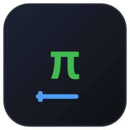
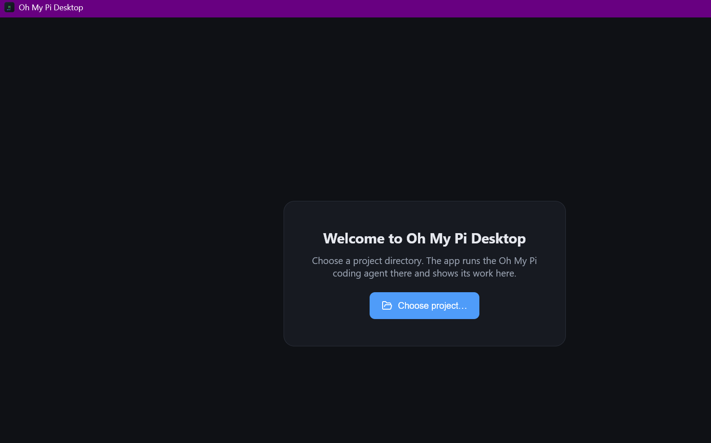

💬 Streaming chat
Assistant output as GFM markdown with syntax-highlighted code blocks and copy buttons. Deltas batch through requestAnimationFrame, so a fast stream doesn't jank the UI.

Oh My Pi DesktopWindows & macOS desktop app · v0.3.0 · MIT
omp ships with a terminal TUI and an RPC mode. This is the GUI —
an Electron app that drives omp --mode rpc as a child process and renders
the whole conversation: streaming markdown, tool-call cards, todos, and sessions.
Requires omp installed. Builds are not signed with a paid certificate — Windows SmartScreen warns on first run, and on macOS use right-click → Open the first time.

Not a terminal wrapper. No PTY, no ANSI parsing, no screen scraping. It speaks
omp's newline-delimited JSON protocol directly — framed, id-correlated, with v2 lossless chunking.
Assistant output as GFM markdown with syntax-highlighted code blocks and copy buttons. Deltas batch through requestAnimationFrame, so a fast stream doesn't jank the UI.
Every tool execution becomes an inline card — name, status, collapsible pretty-printed arguments, and the result or error excerpt, in transcript order.
Pick a project directory and the app groups sessions by the cwd in each session file's header. New, resume, rename, export to HTML.
Most recent page first, then load older through cursor pagination. No monolithic history fetch, however long the session ran.
Abort, steer with an interrupting message, or queue a follow-up for after the turn. Plus model picker, thinking level, and fast mode.
If the agent dies you get a banner, and it restarts on the same project and session with history replayed. The transcript is not lost.
Three layers, one responsibility each. The renderer is a pure projection of events — no agent logic, no filesystem access, no Node.
┌─────────────────────────────────────────────────────────┐
│ Renderer (React + Vite, Chromium) │
│ Chat transcript · tool-call cards · todos · sessions │
└───────────────▲─────────────────────────────────────────┘
│ contextBridge IPC (window.omp, typed)
┌───────────────┴─────────────────────────────────────────┐
│ Electron main (Node) │
│ RPC client (JSONL framing, id correlation, v2 chunks) │
│ omp process lifecycle · session store · window mgmt │
└───────────────▲─────────────────────────────────────────┘
│ stdin/stdout JSONL
┌───────────────┴─────────────────────────────────────────┐
│ omp --mode rpc [--cwd <project>] (child process) │
└─────────────────────────────────────────────────────────┘omp's own store at
~/.omp/agent. The app spawns a process and speaks a protocol to it, nothing more.
omp installedThe app probes the usual install locations and your login-shell PATH on both platforms, and takes an explicit path in Settings if yours lives somewhere unusual.
Download the installer (Windows) or the .dmg (macOS, Apple Silicon or Intel) from releases — or build it yourself:
npm ci
npm run dist:mac # or dist:winOutputs a .dmg + .zip on macOS, or an NSIS installer + portable .exe on Windows.
On first run, choose a directory. The agent runs there, and the app remembers it.
npm run dev # electron-vite dev server + app window
npm test # unit tests against a mock omp process
RUN_E2E=1 npm test # + integration against the real ompThe unit tests use a mock omp: a Node script emitting canned JSONL — ready frame,
v2 negotiation, response correlation, streaming deltas, tool events, and a chunked frame. That covers the
protocol without needing a model.